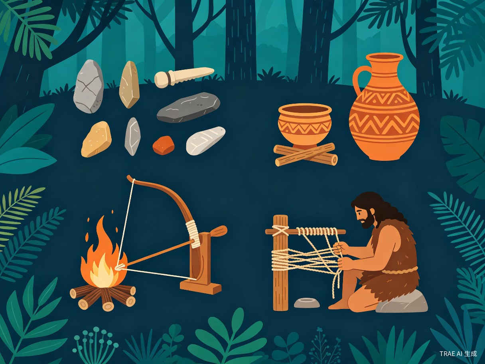

第二章：序章篇 — 文明的起点

石化事件后，千空在原始世界中独自醒来。没有工具、没有火、没有任何现代设施，他必须从人类文明的最底层开始，一步步重建科技树。这一篇章展现了人类最古老的技术发明，也是千空科学复兴之路的起点。
篇章背景
公元5738年，千空在石化的3700年后苏醒。他发现整个世界已回归原始状态，所有人类文明痕迹都已被时间抹去。凭借过目不忘的记忆力和丰富的科学知识，千空开始了从零到一的文明重建。
复活液合成流程
graph LR
A["蝙蝠粪便 Bat Guano"] --> B["硝酸钾 KNO3"]
B --> C["加热 + 硫酸 H2SO4"]
C --> D["硝酸 HNO3"]
E["葡萄汁发酵"] --> F["蒸馏"]
F --> G["乙醇 C2H5OH"]
D --> H["混合 Nital复活液"]
G --> H
H --> I["解除石化 复活人类"]
style A fill:#2a3450,stroke:#8892a4,color:#e8ecf1
style E fill:#2a3450,stroke:#8892a4,color:#e8ecf1
style I fill:#00d4aa,stroke:#00d4aa,color:#0a0e17
复活液（Nital）Nital Etchant / Revival Fluid
剧中描述
千空苏醒后的首要任务是解除同伴的石化状态。他发现石化外壳可以被硝酸（HNO₃）和乙醇（C₂H₅OH）的混合液溶解。千空首先从蝙蝠粪便中提取硝酸钾，再利用硫酸制备硝酸；同时将葡萄汁发酵并蒸馏获得乙醇，最终混合制成复活液，成功解除了好友大木大树（Taiju）的石化。
科学原理
剧中的"Nital"在现实中确实存在，是硝酸-乙醇混合液（Nitric Acid + Ethanol）的简称，通常含2-10%的硝酸溶于乙醇中。Nital在工业上主要用于金相分析中的金属腐蚀刻蚀，用于观察金属的微观结构。其原理是硝酸对金属表面进行选择性腐蚀，使晶界和不同相显现出来。
现实对照
现实中的Nital是一种实验室金相腐蚀剂，由法国冶金学家Albert Portevin在20世纪初推广使用。标准配方为2-6% HNO₃（质量分数）溶于乙醇。它绝非任何形式的"解石化剂"。千空将这种工业试剂重新定义为复活液，是作品的核心设定之一。[1]
准确性评估
从蝙蝠粪便提取硝酸盐的流程在化学上是可行的（硝石矿与蝙蝠洞穴的关联在历史上确实存在）。蒸馏制备乙醇的流程也是正确的。但将Nital作为"复活液"使用完全是虚构设定，现实中不存在任何能解除石化的化学物质。
化学流程合理，但核心功能为虚构弓钻取火Bow Drill Fire Making
剧中描述
千空苏醒后面临的第一个挑战是取火。他制作了一套弓钻装置：用弯曲的树枝作为弓，绳索缠绕在直木钻上，通过来回拉动弓使钻头高速旋转，在底板上产生摩擦热，最终引燃火种。这是千空重建文明的第一步。
科学原理
弓钻取火利用的是摩擦生热原理。当钻头在底板上高速旋转时，摩擦力将机械能转化为热能。当温度达到木材的燃点（约300°C）时，会产生暗红色的炭粉（余烬），将其放入火绒中吹气供氧即可引燃明火。弓钻的优势在于通过弓的往复运动，可以实现持续高速旋转，远比手转钻效率高。
现实对照
弓钻取火是旧石器时代人类最重要的发明之一，距今约1万至2.5万年。考古证据表明，弓钻技术可能在多个大陆独立发展。在非洲、亚洲和美洲的原住民文化中都能找到弓钻取火的痕迹。[2]
准确性评估
作品中对弓钻取火的描绘非常准确，包括弓的结构、火种的制备、吹气引燃等步骤都与现实操作一致。
高度准确打制石器Stone Knapping / Lithic Tools
剧中描述
千空利用石锤技术（hard hammer percussion）制作石斧和石刀。他选择合适的燧石或黑曜石，用另一块石头作为锤子，沿着石头的纹理敲击，剥离出锋利的石片，制成切割工具和武器。
科学原理
打制石器的核心原理是贝壳状断口（conchoidal fracture）。某些矿物（如燧石、黑曜石）在受到定向冲击时，会沿着可预测的路径产生贝壳状的断裂面，形成极其锋利的边缘。
现实对照
打制石器是人类最早的技术发明，可追溯到约260万年前的东非奥杜瓦伊文化（Oldowan）。最早的石器制造者是能人（Homo habilis）。[3]
准确性评估
作品中对打制石器的描绘基本准确，包括选材、敲击角度和刃口形状。
高度准确肥皂（皂化反应）Soap / Saponification
剧中描述
为了改善原始部落的生活条件，千空制作了肥皂。他收集草木灰（富含碳酸钾 K₂CO₃）作为碱，与动物油脂混合加热，通过皂化反应制成了肥皂。
科学原理
皂化反应（Saponification）是酯类在碱性条件下的水解反应。油脂（甘油三酯）与碱反应，生成脂肪酸盐（肥皂）和甘油。油脂 + NaOH → 脂肪酸钠（肥皂） + 甘油。肥皂分子具有两亲性：一端亲水，一端亲油，能将油脂污垢包裹在胶束中。
现实对照
肥皂的使用历史可追溯到苏美尔文明（约公元前2800年）。现代皂化反应的化学机理由法国化学家谢弗勒尔（Chevreul）于1823年系统阐明。[4]
准确性评估
用草木灰（碳酸钾）与油脂制作软皂的流程完全正确。这是作品中化学准确性最高的发明之一。
高度准确黑火药Black Powder / Gunpowder
剧中描述
在与司（Tsukasa）的对峙中，千空利用硝石提取技术，配合硫磺和木炭，按精确比例混合制成了黑火药。千空将火药装入竹筒中制成简易爆炸装置。
科学原理
黑火药是硝酸钾（KNO₃）、硫磺（S）和木炭（C）的机械混合物。经典配比为75% KNO₃ + 10% S + 15% C。2 KNO₃ + S + 3 C → K₂S + N₂ + 3 CO₂
现实对照
黑火药由中国炼丹术士在唐代（约公元9世纪）偶然发现，是世界上最早的化学炸药。[5]
准确性评估
黑火药的配方和制备方法在作品中是准确的。
高度准确十字弓Crossbow
剧中描述
千空为对抗司的"武力帝国"，设计了十字弓作为远程武器。十字弓结合了弓的弹射原理和机械省力机构，使不具备强大臂力的科学组成员也能使用。
科学原理
十字弓的核心原理是弹性势能储存。弓臂弯曲时储存弹性势能，释放时转化为箭矢的动能。通过机械结构（扳机、绞盘）上弦，允许使用者用更大的力量拉弓。
现实对照
十字弓起源于中国战国时期（约公元前5-4世纪），是古代中国最重要的军事发明之一。[6]
准确性评估
十字弓的设计和原理在作品中是准确的。
高度准确六分仪Sextant
剧中描述
千空制作了一台简易六分仪用于天文导航。他利用青铜镜和刻度盘，通过测量天体与地平线之间的角度来确定纬度。
科学原理
六分仪利用光学反射原理测量天体高度角。通过两面镜子（指标镜和地平镜），将天体的影像反射到与地平线重合的位置，读取刻度弧上的角度值。
现实对照
六分仪由英国数学家约翰·哈德利（John Hadley）和美国发明家托马斯·戈弗雷（Thomas Godfrey）于1731年独立发明。[7]
准确性评估
六分仪的原理描述正确，但千空在原始条件下制作精密光学仪器的难度被大幅低估。
原理正确，制造难度被低估